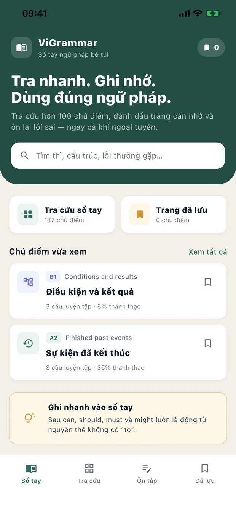
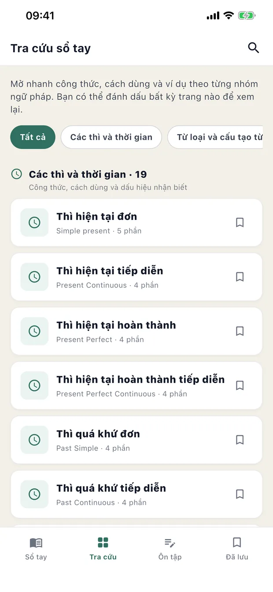
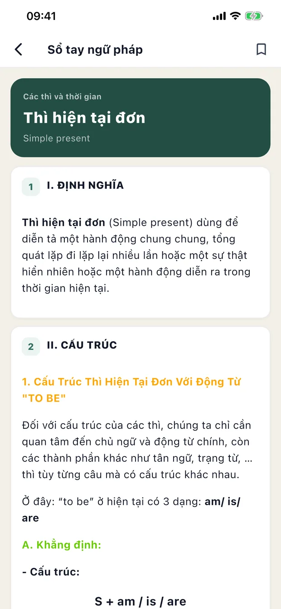
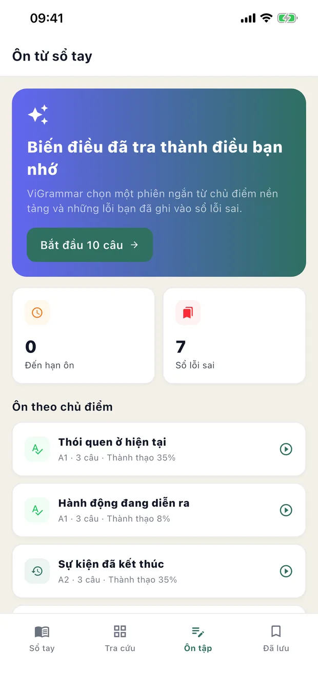

Tra cứu tức thì
Tìm theo tên thì, cấu trúc hoặc lỗi thường gặp và mở đúng trang chỉ trong vài giây.
Sổ tay ngữ pháp bỏ túi
ViGrammar là sổ tay ngữ pháp tiếng Anh cô đọng: mở nhanh công thức, xem ví dụ, đánh dấu trang cần nhớ và ôn lại lỗi sai — ngay cả khi ngoại tuyến.

Mọi thứ trong một sổ tay
Nội dung được sắp xếp rõ ràng theo nhóm ngữ pháp và cấp độ, kèm phần luyện tập bám sát điều bạn vừa tra.
Tìm theo tên thì, cấu trúc hoặc lỗi thường gặp và mở đúng trang chỉ trong vài giây.
Mục lục ngữ pháp cô đọng theo cấp độ CEFR A1–B2, kèm công thức, cách dùng và ví dụ dễ nhớ.
Mỗi câu hỏi đi kèm đáp án và lời giải chi tiết để bạn hiểu quy tắc, không chỉ chọn đúng.
Lỗi được tự phân loại và nhắc ôn lại theo lịch ngắt quãng, đưa đúng câu trở lại khi bạn sắp quên.
Ghim những chủ điểm cần nhớ vào sổ tay của bạn; ứng dụng tự lưu lại nội dung vừa mở.
Tra cứu và luyện tập mọi lúc, kể cả khi không có mạng. Hỗ trợ cả giao diện sáng và tối.
Nhìn qua một vòng
Từ trang chủ tra nhanh đến bài luyện tập — mọi màn hình đều rõ ràng và tập trung.



Cách hoạt động
Mở chủ điểm cần dùng, xem công thức, cách dùng và ví dụ ngắn gọn.
Đánh dấu trang quan trọng để mở lại thật nhanh trong sổ tay của bạn.
Làm trắc nghiệm và để sổ lỗi sai nhắc bạn ôn lại đúng lúc.
Không quảng cáo, không tài khoản, không mua hàng trong ứng dụng. Toàn bộ tiến độ học chỉ được lưu trên thiết bị của bạn.